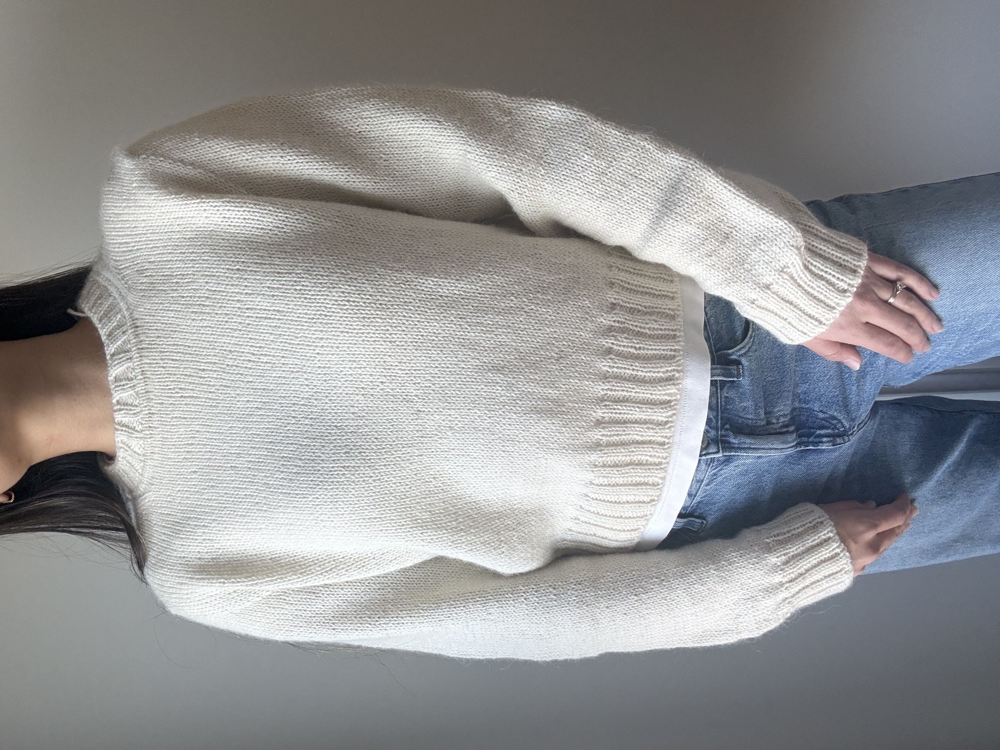

Sloane Sweater
Meet the Sloane Sweater — a thoughtfully designed, top-down sweater that brings together
clean lines, structure, and understated details.
Simple in its overall silhouette, Sloane is all about the little things that make a piece special.
A timeless wardrobe staple you'll reach for again and again.
Sizes
1, (2), 3, (4), 5, (6), 7
Measurements
Sloane is designed to have a 7 to 10 inch positive ease.
The chest measurements for the finished knitwear are approximately:
41, (43 1/2), 45 1/2, (48), 50.5, (54 3/4), 57 1/4 inches or
[104 1/4 (110 1/2), 116 (122), 128.5, (139), 145 1/4] cm
Suggested Materials
Yarn: 400, (450), 500, (550), 600, (650), 700 g of Baa Ram Ewe Coast.
Sample is knitted in color Seagrass.
Needles: US 8 (5mm) circular needles, 24 inches long
Notions: Stitch markers, tapestry needle
Gauge
19 sts and 24 rows = 10 cm or 4 inches in stockinette stitch